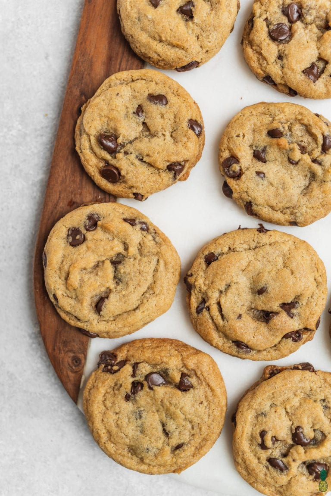

Classic Vegan Chocolate Chip Cookies

Description
These Vegan Chocolate Chip Cookies are as classic and delicious as chocolate chip cookies get! They’re perfectly chocolatey, soft & chewy, easy to make, and require just 9 simple ingredients. Plus, they’re made in 1 bowl and require no chill time.
Ingredients
- Coconut oil
- Sugar
- Applesauce
- Vanilla extract
- All-purpose flour
- Baking soda
- Salt
- Baking powder
- Vegan chocolate chips
Steps
- Cream the oil and sugars together. In a large bowl, cream the coconut oil, granulated sugar, and brown sugar together until light and fluffy, about 1-2 minutes.
- Add the apple sauce and vanilla. Mix again until combined.
- Stir in the dry ingredients. In the same bowl, add the all-purpose flour, baking soda, baking powder, and salt until a cookie dough forms. Lastly, fold in the chocolate chips using a spatula until well incorporated.
- Preheat the oven. These cookies bake at 350°F and line a couple of baking sheets with parchment paper or a reusable baking mat. This recipe makes about 36 cookies, so you’ll likely need to bake in batches.
- Scoop your cookie dough. Using a 1 tablespoon-sized scooper, drop mounds of chocolate chip cookie dough onto the baking sheet, leaving about 2” between each cookie dough mound. No need to press them down – they’ll spread perfectly on their own!
- Bake. Bake these chocolate chip cookies for 13-14 minutes, or until the edges are slightly crisp and golden and the center is still soft. The cookies will seem under-baked, but they will firm up while they cool.
- Transfer to a cooling rack. We typically allow the cookies to cool completely on a cooling rack before digging in, but you can’t go wrong eating warm chocolate chip cookies either!